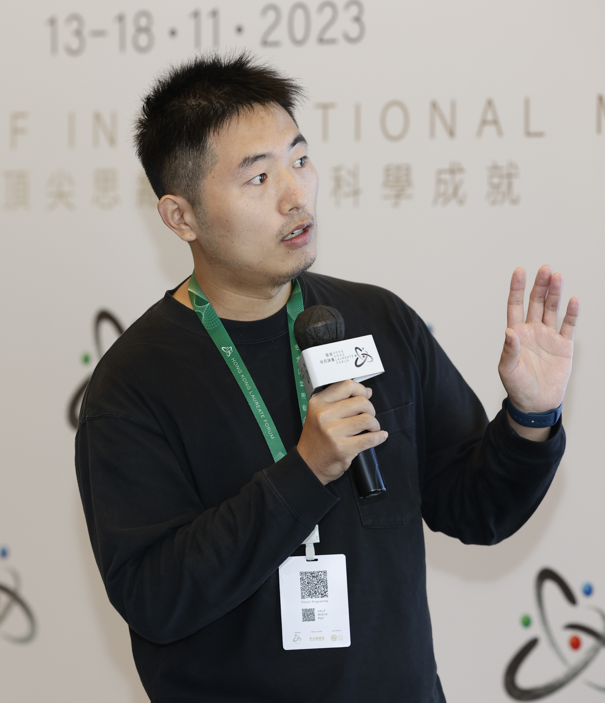

Qianhang Ding 丁乾航 To Understand To Find

I am a Research Fellow at Center for Theoretical Physics of the Universe (CGA Group), Institute for Basic Science.
Room B465, Center for Theoretical Physics of the Universe,
Theory Building, Institute for Basic Sciene (IBS),
55, Expo-ro, Yuseong-gu, Daejeon, Korea.
Email:
dingqh@ibs.re.kr
2018-2023 PhD in Physics, Department of Physics, The Hong Kong University of Science and Technology
2014-2018 Bachelor of Science, Department of Physics, Shanxi University
2023-present Senior Researcher, Center for Theoretical Physics of the Universe (CGA Group), Institute for Basic Science
2024, 05-06 QUPIP Researcher, QUP, High Energy Accelerator Research Organization (KEK)
2022-2023 Research Assistant, Department of Physics, The Hong Kong University of Science and Technology
Theory: gravitational wave cosmology, cosmic tensions, dark matter, primordial black hole, and fundamental topics
Observation: multi-messenger astronomy such as CMB physics, gravitational wave and pulsar astronomy
Reconstruction of Primordial Power Spectrum from Gravitational Waves of High-Redshift Black Hole Binaries [PDF]
Qianhang Ding, Xinpeng Wang, Masahide Yamaguchi, Ying-li Zhang
Abstract:
High-redshift binary black hole (BBH) events are promising candidates for primordial black holes (PBHs) detectable by next-generation gravitational wave (GW) detectors. A redshifted mass distribution of detected PBH candidates can be obtained from GW observations, from which the underlying PBH mass function can be reconstructed. In this work, we develop a framework that applies the gradient-descent method to the observed redshifted mass distribution and reconstructs the PBH mass function and, subsequently, the primordial power spectrum (PPS) on small scales. As an illustrative application, we analyze BBH events in the LIGO-Virgo-KAGRA (LVK) catalogs under a specified PBH selection criterion. We find a regularization-stable candidate bump-like enhancement of order 𝒪(10-2) in the reconstructed PPS, centered around kpeak≃5.7×105 Mpc-1 under the adopted assumptions. Our results demonstrate the feasibility of reconstructing the small-scale PPS from high-redshift BBH observations with next-generation GW detectors.
Gravitational Waves from Mergers of Asymmetric Dark Stars [PDF]
Boris Betancourt Kamenetskaia, Qianhang Ding, Chris Kouvaris
Abstract:
A strongly self-interacting component of asymmetric dark matter (DM) particles can form compact dark stars (DSs). These objects have a broad spectrum of masses and radii, with distinct evolution histories from both neutron stars and black holes (BHs). We argue that these differences allow a population of DSs to contribute significantly to the astrophysical merger rate in unique and discernible ways. Specifically, their merger rate could dominate at low redshifts over other sources, while their mass function may populate windows outside known astrophysical processes. We investigate the structure and formation of DSs within a dissipative model, and calculate the enhancement of their merger cross-section due to tidal deformation effects. From this, we derive the present-day merger rate and its differential mass distribution. These findings open a new window to probe DM substructure and particle interactions through present and future gravitational wave (GW) observatories.
Astrophotography [bilibili Channel]
Popular science article for the Hong Kong Laureate Forum [Link]
Our work [2304.08824] with Dr. Ali Akil is awarded The 2025 Blaumann Prize [Link].